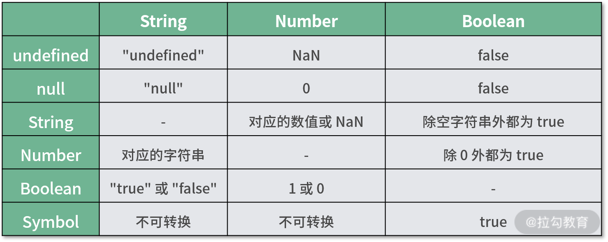

要点：JavaScript数据类型、JavaScript函数
一、JavaScript数据类型
数据类型通常是一门编程语言的基础知识，JavaScript 的数据类型可以分为 7 种：空（Null）、未定义（Undefined）、数字（Number）、字符串（String）、布尔值（Boolean）、符号（Symbol）、对象（Object）。
其中前 6 种类型为基础类型，最后 1 种为引用类型。这两者的区别在于，基础类型的数据在被引用或拷贝时，是值传递，也就是说会创建一个完全相等的变量；而引用类型只是创建一个指针指向原有的变量，实际上两个变量是“共享”这个数据的，并没有重新创建一个新的数据。
下面我们就来分别介绍这 7 种数据类型的重要概念及常见操作。
Undefined
Undefined 是一个很特殊的数据类型，它只有一个值，也就是 undefined。可以通过下面几种方式来得到 undefined：
- 引用已声明但未初始化的变量；
- 引用未定义的对象属性；
- 执行无返回值函数；
- 执行 void 表达式；
- 全局常量 window.undefined 或 undefined。
对应代码如下：
1 | var a; // undefined |
其中比较推荐通过 void 表达式来得到 undefined 值，因为这种方式既简便（window.undefined 或 undefined 常量的字符长度都大于 “void 0” 表达式）又不需要引用额外的变量和属性；同时它作为表达式还可以配合三目运算符使用，代表不执行任何操作。
如下面的代码就表示满足条件 x 大于 0 且小于 5 的时候执行函数 fn，否则不进行任何操作：
1 | x>0 && x<5 ? fn() : void 0; |
如何判断一个变量的值是否为 undefined 呢？
下面的代码给出了 3 种方式来判断变量 x 是否为 undefined，你可以先思考一下哪一种可行。
方式 1 直接通过逻辑取非操作来将变量 x 强制转换为布尔值进行判断；方式 2 通过 3 个等号将变量 x 与 undefined 做真值比较；方式 3 通过 typeof 关键字获取变量 x 的类型，然后与 ‘undefined’ 字符串做真值比较：
1 | // 方式1 |
现在来揭晓答案，方式 1 不可行，因为只要变量 x 的值为 undefined、空字符串、数值 0、null 时都会判断为真。方式 2 也存在一些问题，虽然通过 “===” 和 undefined 值做比较是可行的，但如果 x 未定义则会抛出错误 “ReferenceError: x is not defined” 导致程序执行终止，这对于代码的健壮性显然是不利的。方式 3 则解决了这一问题。
Null
Null 数据类型和 Undefined 类似，只有唯一的一个值 null，都可以表示空值，甚至我们通过 “==” 来比较它们是否相等的时候得到的结果都是 true，但 null 是 JavaScript 保留关键字，而 undefined 只是一个常量。
也就是说我们可以声明名称为 undefined 的变量（虽然只能在老版本的 IE 浏览器中给它重新赋值），但将 null 作为变量使用时则会报错。
Boolean
Boolean 数据类型只有两个值：true 和 false，分别代表真和假，理解和使用起来并不复杂。但是我们常常会将各种表达式和变量转换成 Boolean 数据类型来当作判断条件，这时候就要注意了。
下面是一个简单地将星期数转换成中文的函数，比如输入数字 1，函数就会返回“星期一”，输入数字 2 会返回“星期二”，以此类推，如果未输入数字则返回 undefined。
1 | function getWeek(week) { |
这里在 if 语句中就进行了类型转换，将 week 变量转换成 Boolean 数据类型，而 0、空字符串、null、undefined 在转换时都会返回 false。所以这段代码在输入 0 的时候不会返回“星期日”，而返回 undefined。
我们在做强制类型转换的时候一定要考虑这个问题。
Number
两个重要值
Number 是数值类型，有 2 个特殊数值得注意一下，即 NaN 和 Infinity。
- NaN（Not a Number）通常在计算失败的时候会得到该值。要判断一个变量是否为 NaN，则可以通过 Number.isNaN 函数进行判断。
- Infinity 是无穷大，加上负号 “-” 会变成无穷小，在某些场景下比较有用，比如通过数值来表示权重或者优先级，Infinity 可以表示最高优先级或最大权重。
进制转换
当我们需要将其他进制的整数转换成十进制显示的时候可以使用 parseInt 函数，该函数第一个参数为数值或字符串，第二个参数为进制数，默认为 10，当进制数转换失败时会返回 NaN。所以，如果在数组的 map 函数的回调函数中直接调用 parseInt，那么会将数组元素和索引值都作为参数传入。
1 | ['0', '1', '2'].map(parseInt) // [0, NaN, NaN] |
而将十进制转换成其他进制时，可以通过 toString 函数来实现。
1 | (10).toString(2) // "1010" |
精度问题
对于数值类型的数据，还有一个比较值得注意的问题，那就是精度问题，在进行浮点数运算时很容易碰到。比如我们执行简单的运算 0.1 + 0.2，得到的结果是 0.30000000000000004，如果直接和 0.3 作相等判断时就会得到 false。
1 | 0.1 + 0.2 // 0.30000000000000004 |
出现这种情况的原因在于计算的时候，JavaScript 引擎会先将十进制数转换为二进制，然后进行加法运算，再将所得结果转换为十进制。在进制转换过程中如果小数位是无限的，就会出现误差。同样的，对于下面的表达式，将数字 5 开方后再平方得到的结果也和数字 5 不相等。
1 | Math.pow(Math.pow(5, 1/2), 2) // 5.000000000000001 |
对于这个问题的解决方法也很简单，那就是消除无限小数位。
- 一种方式是先转换成整数进行计算，然后再转换回小数，这种方式适合在小数位不是很多的时候。比如一些程序的支付功能 API 以“分”为单位，从而避免使用小数进行计算。
- 还有另一种方法就是舍弃末尾的小数位。比如对上面的加法就可以先调用 toPrecision 截取 12 位，然后调用 parseFloat 函数转换回浮点数。
1 | parseFloat((0.1 + 0.2).toPrecision(12)) // 0.3 |
String
String 类型是最常用的数据类型了，关于它的基础 API 函数大家应该比较熟悉了，这里我就不多介绍了。下面通过一道笔试题来重点介绍它的使用场景。
千位分隔符是指为了方便识别较大数字，每隔三位数会加入 1 个逗号，该逗号就是千位分隔符。如果要编写一个函数来为输入值的数字添加千分位分隔符，该怎么实现呢？
一种很容易想到的方法就是从右往左遍历数值每一位，每隔 3 位添加分隔符。为了操作方便，我们可以将数值转换成字符数组，而要实现从右往左遍历，一种实现方式是通过 for 循环的索引值找到对应的字符；而另一种方式是通过数组反转，从而变成从左到右操作。
1 | function sep(n) { |
这种方式就是将字符串数据转化成引用类型数据，即用数组来实现。
第二种方式则是通过引用类型，即用正则表达式对字符进行替换来实现。
1 | function sep2(n){ |
Symbol
Symbol 是 ES6 中引入的新数据类型，它表示一个唯一的常量，通过 Symbol 函数来创建对应的数据类型，创建时可以添加变量描述，该变量描述在传入时会被强行转换成字符串进行存储。
1 | var a = Symbol('1') |
基于上面的特性，Symbol 属性类型比较适合用于两类场景中：常量值和对象属性。
避免常量值重复
假设有个 getValue 函数，根据传入的字符串参数 key 执行对应代码逻辑。代码如下所示：
1 | function getValue(key) { |
这段代码对调用者而言非常不友好，因为代码中使用了魔术字符串（魔术字符串是指在代码之中多次出现、与代码形成强耦合的某一个具体的字符串或者数值），导致调用 getValue 函数时需要查看函数源码才能找到参数 key 的可选值。所以可以将参数 key 的值以常量的方式声明出来。
1 | const KEY = { |
但这样也并非完美，假设现在我们要在 KEY 常量中加入一个 key，根据对应的规则，很有可能会出现值重复的情况：
1 | const KEY = { |
这显然会出现问题：
1 | getValue(KEY.baidu) // 等同于 getValue(KEY.bytedance) |
所以在这种场景下更适合使用 Symbol，我们不关心值本身，只关心值的唯一性。
1 | const KEY = { |
避免对象属性覆盖
假设有这样一个函数 fn，需要对传入的对象参数添加一个临时属性 user，但可能该对象参数中已经有这个属性了，如果直接赋值就会覆盖之前的值。此时就可以使用 Symbol 来避免这个问题。
创建一个 Symbol 数据类型的变量，然后将该变量作为对象参数的属性进行赋值和读取，这样就能避免覆盖的情况，示例代码如下：
1 | function fn(o) { // {user: {id: xx, name: yy}} |
补充：类型转换
什么是类型转换？
JavaScript 这种弱类型的语言，相对于其他高级语言有一个特点，那就是在处理不同数据类型运算或逻辑操作时会强制转换成同一数据类型。如果我们不理解这个特点，就很容易在编写代码时产生 bug。
通常强制转换的目标数据类型为 String、Number、Boolean 这三种。下面的表格中显示了 6 种基础数据类型转换关系。

除了不同类型的转换之外，操作同种数据类型也会发生转换。把基本类型的数据换成对应的对象过程称之为“装箱转换”，反过来，把数据对象转换为基本类型的过程称之为“拆箱转换”。
对于装箱和拆箱转换操作，我们既可以显示地手动实现，比如将 Number 数据类型转换成 Number 对象；也可以通过一些操作触发浏览器显式地自动转换，比如将对 Number 对象进行加法运算。
1 | var n = 1 |
什么时候会触发类型转换？
下面这些常见的操作会触发隐式地类型转换，我们在编写代码的时候一定要注意。
- 运算相关的操作符包括 +、-、+=、++、* 、/、%、<<、& 等。
- 数据比较相关的操作符包括 >、<、== 、<=、>=、===。
- 逻辑判断相关的操作符包括 &&、!、||、三目运算符。
Object
相对于基础类型，引用类型 Object 则复杂很多。简单地说，Object 类型数据就是键值对的集合，键是一个字符串（或者 Symbol） ，值可以是任意类型的值； 复杂地说，Object 又包括很多子类型，比如 Date、Array、Set、RegExp。
对于 Object 类型，我们重点理解一种常见的操作，即深拷贝。
- 由于引用类型在赋值时只传递指针，这种拷贝方式称为浅拷贝。
- 而创建一个新的与之相同的引用类型数据的过程称之为深拷贝。
现在我们来实现一个拷贝函数，支持上面 7 种类型的数据拷贝。
对于 6 种基础类型，我们只需简单的赋值即可，而 Object 类型变量需要特殊操作。因为通过等号“=”赋值只是浅拷贝，要实现真正的拷贝操作则需要通过遍历键来赋值对应的值，这个过程中如果遇到 Object 类型还需要再次进行遍历。
为了准确判断每种数据类型，我们可以先通过 typeof 来查看每种数据类型的描述：
1 | [undefined, null, true, '', 0, Symbol(), {}].map(it => typeof it)// ["undefined", "object", "boolean", "string", "number", "symbol", "object"] |
发现 null 有些特殊，返回结果和 Object 类型一样都为"object"，所以需要再次进行判断。按照上面分析的结论，我们可以写出下面的函数：
1 | function clone(data) { |
在遍历 Object 类型数据时，我们需要把 Symbol 数据类型也考虑进来，所以不能通过 Object.keys 获取键名或 for…in 方式遍历，而是通过 getOwnPropertyNames 和 getOwnPropertySymbols 函数将键名组合成数组，然后进行遍历。对于键数组长度为 0 的非 Object 类型的数据可直接返回，然后再遍历递归，最终实现拷贝。
我们在编写递归函数的时候需要特别注意的是，递归调用的终止条件，避免无限递归。那在这个 clone 函数中有没有可能出现无限递归调用呢？
答案是有的。那就是当对象数据嵌套的时候，比如像下面这种情况，对象 a 的键 b 指向对象 b，对象 b 的键 a 指向对象 a，那么执行 clone 函数就会出现死循环，从而耗尽内存。
1 | var a = { |
怎么避免这种情况呢？一种简单的方式就是把已添加的对象记录下来，这样下次碰到相同的对象引用时，直接指向记录中的对象即可。要实现这个记录功能，我们可以借助 ES6 推出的 WeakMap 对象，该对象是一组键/值对的集合，其中的键是弱引用的。其键必须是对象，而值可以是任意的。
我们对 clone 函数改造一下，添加一个 WeakMap 来记录已经拷贝过的对象，如果当前对象已经被拷贝过，那么直接从 WeakMap 中取出，否则重新创建一个对象并加入 WeakMap 中。具体代码如下：
1 | function clone(obj) { |
总结
这一课时通过实例与原理相结合，带你深入理解了 JavaScript 的 6 种基础数据类型和 1 种引用数据类型。对于 6 种基础数据类型，我们要熟知它们之间的转换关系，而引用类型则比较复杂，重点讲了如何深拷贝一个对象。其实引用对象的子类型比较多，由于篇幅所限没有进行一一讲解，需要大家在平常工作中继续留心积累。
二、JavaScript函数
数据类型与函数是很多高级语言中最重要的两个概念，前者用来存储数据，后者用来存储代码。JavaScript 中的函数相对于数据类型而言更加复杂，它可以有属性，也可以被赋值给一个变量，还可以作为参数被传递…正是这些强大特性让它成了 JavaScript 的“一等公民”。
下面我们就来详细了解函数的重要特性。
this 关键字
什么是 this？this 是 JavaScript 的一个关键字，一般指向调用它的对象。
这句话其实有两层意思，首先 this 指向的应该是一个对象，更具体地说是函数执行的“上下文对象”。其次这个对象指向的是“调用它”的对象，如果调用它的不是对象或对象不存在，则会指向全局对象（严格模式下为 undefined）。
下面举几个例子来进行说明。
- 当代码 1 执行 fn() 函数时，实际上就是通过对象 o 来调用的，所以 this 指向对象 o。
- 代码 2 也是同样的道理，通过实例 a 来调用，this 指向类实例 a。
- 代码 3 则可以看成是通过全局对象来调用，this 会指向全局对象（需要注意的是，严格模式下会是 undefined）。
1 | // 代码 1 |
是不是觉得 this 的用法很简单？别着急，我们再来看看其他例子以加深理解。
（1）如果在函数 fn2() 中调用函数 fn()，那么当调用函数 fn2() 的时候，函数 fn() 的 this 指向哪里呢？
1 | function fn() {console.log(this)} |
由于没有找到调用 fn 的对象，所以 this 会指向全局对象，答案就是 window（Node.js 下是 global）。
（2）再把这段代码稍稍改变一下，让函数 fn2() 作为对象 obj 的属性，通过 obj 属性来调用 fn2，此时函数 fn() 的 this 指向哪里呢？
1 | function fn() {console.log(this)} |
这里需要注意，调用函数 fn() 的是函数 fn2() 而不是 obj。虽然 fn2() 作为 obj 的属性调用，但 fn2()中的 this 指向并不会传递给函数 fn()， 所以答案也是 window（Node.js 下是 global）。
（3）对象 dx 拥有数组属性 arr，在属性 arr 的 forEach 回调函数中输出 this，指向的是什么呢？
1 | var dx = { |
按照之前的说法，很多同学可能会觉得输出的应该是对象 dx 的属性 arr 数组。但其实仍然是全局对象。
如果你看过 forEach 的说明文档便会知道，它有两个参数，第一个是回调函数，第二个是 this 指向的对象，这里只传入了回调函数，第二个参数没有传入，默认为 undefined，所以正确答案应该是输出全局对象。
类似的，需要传入 this 指向的函数还有：every()、find()、findIndex()、map()、some()，在使用的时候需要特别注意。
（4）前面提到通过类实例来调用函数时，this 会指向实例。那么如果像下面的代码，创建一个 fun 变量来引用实例 b 的 fn() 函数，当调用 fun() 的时候 this 会指向什么呢？
1 | class B { |
这道题你可能会很容易回答出来：fun 是在全局下调用的，所以 this 应该指向的是全局对象。这个思路没有没问题，但是这里有个隐藏的知识点。那就是 ES6 下的 class 内部默认采用的是严格模式，实际上面代码的类定义部分可以理解为下面的形式。
1 | class B { |
而严格模式下不会指定全局对象为默认调用对象，所以答案是 undefined。
（5）ES6 新加入的箭头函数不会创建自己的 this，它只会从自己的作用域链的上一层继承 this。可以简单地理解为箭头函数的 this 继承自上层的 this，但在全局环境下定义仍会指向全局对象。
1 | var arrow = {fn: () => { |
所以虽然通过对象 arrow 来调用箭头函数 fn()，那么 this 指向不是 arrow 对象，而是全局对象。如果要让 fn() 箭头函数指向 arrow 对象，我们还需要再加一层函数，让箭头函数的上层 this 指向 arrow 对象。
1 | var arrow = { |
（6）前面提到 this 指向的要么是调用它的对象，要么是 undefined，那么如果将 this 指向一个基础类型的数据会发生什么呢？
比如下面的代码将 this 指向数字 0，打印出的 this 是什么呢？
1 | [0].forEach(function() {console.log(this)}, 0) // ? |
结合上一讲关于数据类型的知识，我们知道基础类型也可以转换成对应的引用对象。所以这里 this 指向的是一个值为 0 的 Number 类型对象。
（7）改变 this 指向的常见 3 种方式有 bind、call 和 apply。call 和 apply 用法功能基本类似，都是通过传入 this 指向的对象以及参数来调用函数。区别在于传参方式，前者为逐个参数传递，后者将参数放入一个数组，以数组的形式传递。bind 有些特殊，它不但可以绑定 this 指向也可以绑定函数参数并返回一个新的函数，当 c 调用新的函数时，绑定之后的 this 或参数将无法再被改变。
1 | function getName() {console.log(this.name)} |
由于 this 指向的不确定性，所以很容易在调用时发生意想不到的情况。在编写代码时，应尽量避免使用 this，比如可以写成纯函数的形式，也可以通过参数来传递上下文对象。实在要使用 this 的话，可以考虑使用 bind 等方式将其绑定。
补充 1：箭头函数
箭头函数和普通函数相比，有以下几个区别，在开发中应特别注意：
- 不绑定 arguments 对象，也就是说在箭头函数内访问 arguments 对象会报错；
- 不能用作构造器，也就是说不能通过关键字 new 来创建实例；
- 默认不会创建 prototype 原型属性；
- 不能用作 Generator() 函数，不能使用 yeild 关键字。
函数的转换
在讲函数转化之前，先来看一道题：编写一个 add() 函数，支持对多个参数求和以及多次调用求和。示例如下：
1 | add(1) // 1 |
对于不定参数的求和处理比较简单，很容易想到通过 arguments 或者扩展符的方式获取数组形式的参数，然后通过 reduce 累加求和。但如果直接返回结果那么后面的调用肯定会报错，所以每次返回的必须是函数，才能保证可以连续调用。也就是说 add 返回值既是一个可调用的函数又是求和的数值结果。
要实现这个要求，我们必须知道函数相关的两个隐式转换函数 toString() 和 valueOf()。toString() 函数会在打印函数的时候调用，比如 console.log、valueOf 会在获取函数原始值时调用，比如加法操作。
具体代码实现如下，在 add() 函数内部定义一个 fn() 函数并返回。fn() 函数的主要职能就是拼接参数并返回自身，当调用 toString() 和 valueOf() 函数时对拼接好的参数进行累加求和并返回。
1 | function add(...args) { |
原型
原型是 JavaScript 的重要特性之一，可以让对象从其他对象继承功能特性，所以 JavaScript 也被称为“基于原型的语言”。
严格地说，原型应该是对象的特性，但函数其实也是一种特殊的对象。例如，我们对自定义的函数进行 instanceof Object 操作时，其结果是 true。
1 | function fn(){} |
而且我们为了实现类的特性，更多的是在函数中使用它，所以在函数这一课时中来深入讲解原型。
什么是原型和原型链？
简单地理解，原型就是对象的属性，包括被称为隐式原型的 *proto* 属性和被称为显式原型的 prototype 属性。
隐式原型通常在创建实例的时候就会自动指向构造函数的显式原型。例如，在下面的示例代码中，当创建对象 a 时，a 的隐式原型会指向构造函数 Object() 的显式原型。
1 | var a = {} |
显式原型是内置函数（比如 Date() 函数）的默认属性，在自定义函数时（箭头函数除外）也会默认生成，生成的显式原型对象只有一个属性 constructor ，该属性指向函数自身。通常配合 new 关键字一起使用，当通过 new 关键字创建函数实例时，会将实例的隐式原型指向构造函数的显式原型。
1 | function fn() {} |
看到这里，不少同学可能会产生一种错觉，那就是隐式原型必须和显式原型配合使用，这种想法是错误的。
下面的代码声明了 parent 和 child 两个对象，其中对象 child 定义了属性 name 和隐式原型 proto，隐式原型指向对象 parent，对象 parent 定义了 code 和 name 两个属性。
当打印 child.name 的时候会输出对象 child 的 name 属性值，当打印 child.code 时由于对象 child 没有属性 code，所以会找到原型对象 parent 的属性 code，将 parent.code 的值打印出来。同时可以通过打印结果看到，对象 parent 并没有显式原型属性。如果要区分对象 child 的属性是否继承自原型对象，可以通过 hasOwnProperty() 函数来判断。
1 | var parent = {code:'p',name:'parent'} |
在这个例子中，如果对象 parent 也没有属性 code，那么会继续在对象 parent 的原型对象中寻找属性 code，以此类推，逐个原型对象依次进行查找，直到找到属性 code 或原型对象没有指向时停止。
这种类似递归的链式查找机制被称作“原型链”。
new 操作符实现了什么？
前面提到显式原型对象在使用 new 关键字的时候会被自动创建。现在再来具体分析通过 new 关键字创建函数实例时到底发生了什么。
下面的代码通过 new 关键字创建了一个函数 F() 的实例。
1 | function F(init) {} |
其中主要包含了 3 个步骤：
- 创建一个临时的空对象，为了表述方便，我们命名为 fn，让对象 fn 的隐式原型指向函数 F 的显式原型；
- 执行函数 F()，将 this 指向对象 fn，并传入参数 args，得到执行结果 result；
- 判断上一步的执行结果 result，如果 result 为非空对象，则返回 result，否则返回 fn。
具体可以表述为下面的代码：
1 | var fn = Object.create(F.prototype) |
怎么通过原型链实现多层继承？
结合原型链和 new 操作符的相关知识，就可以实现多层继承特性了。下面通过一个简单的例子进行说明。
假设构造函数 B() 需要继承构造函数 A()，就可以通过将函数 B() 的显式原型指向一个函数 A() 的实例，然后再对 B 的显式原型进行扩展。那么通过函数 B() 创建的实例，既能访问用函数 B() 的属性 b，也能访问函数 A() 的属性 a，从而实现了多层继承。
1 | function A() { |
补充 2：typeof 和 instanceof
typeof
用来获取一个值的类型，可能的结果有下面几种：
| 类型 | 结果 |
|---|---|
| Undefined | “undefined” |
| Boolean | “boolean” |
| Number | “number” |
| BigInt | “bigint” |
| String | “string” |
| Symbol | “symbol” |
| 函数对象 | “function” |
| 其他对象及 null | “object” |
instanceof
用于检测构造函数的 prototype 属性是否出现在某个实例对象的原型链上。例如，在表达式 left instanceof right 中，会沿着 left 的原型链查找，看看是否存在 right 的 prototype 对象。
1 | left.__proto__.__proto__... =?= right.prototype |
作用域
作用域是指赋值、取值操作的执行范围，通过作用域机制可以有效地防止变量、函数的重复定义，以及控制它们的可访问性。
虽然在浏览器端和 Node.js 端作用域的处理有所不同，比如对于全局作用域，浏览器会自动将未主动声明的变量提升到全局作用域，而 Node.js 则需要显式的挂载到 global 对象上。又比如在 ES6 之前，浏览器不提供模块级别的作用域，而 Node.js 的 CommonJS 模块机制就提供了模块级别的作用域。但在类型上，可以分为全局作用域（window/global）、块级作用域（let、const、try/catch）、模块作用域（ES6 Module、CommonJS）及本课时重点讨论的函数作用域。
命名提升
对于使用 var 关键字声明的变量以及创建命名函数的时候，JavaScript 在解释执行的时候都会将其声明内容提升到作用域顶部，这种机制称为“命名提升”。
变量的命名提升允许我们在同（子）级作用域中，在变量声明之前进行引用，但要注意，得到的是未赋值的变量。而且仅限 var 关键字声明的变量，对于 let 和 const 在定义之前引用会报错。
1 | console.log(a) // undefined |
函数的命名提升则意味着可以在同级作用域或者子级作用域里，在函数定义之前进行调用。
1 | fn() // 2 |
结合以上两点我们再来看看下面两种函数定义的区别，方式 1 将函数赋值给变量 f；方式 2 定义了一个函数 f()。
1 | // 方式1 |
两种方式对于调用函数方式以及返回结果而言是没有区别的，但根据命名提升的规则，我们可以得知方式 1 创建了一个匿名函数，让变量 f 指向它，这里会发生变量的命名提升；如果我们在定义函数之前调用会报错，而方式 2 则不会。
闭包
在函数内部访问外部函数作用域时就会产生闭包。闭包很有用，因为它允许将函数与其所操作的某些数据（环境）关联起来。这种关联不只是跨作用域引用，也可以实现数据与函数的隔离。
比如下面的代码就通过闭包来实现单例模式。
1 | var SingleStudent = (function () { |
函数 SingleStudent 内部通过闭包创建了一个私有变量 _student，这个变量只能通过返回的匿名函数来访问，匿名函数在返回变量时对其进行判断，如果存在则直接返回，不存在则在创建保存后返回。
补充 3：经典笔试题
1 | for( var i = 0; i < 5; i++ ) { |
这是一道作用域相关的经典笔试题，需要实现的功能是每隔 1 秒控制台打印数字 0 到 4。但实际执行效果是每隔一秒打印的数字都是 5，为什么会这样呢？
如果把这段代码转换一下，手动对变量 i 进行命名提升，你就会发现 for 循环和打印函数共享了同一个变量 i，这就是问题所在。
1 | var i; |
要修复这段代码方法也有很多，比如将 var 关键字替换成 let，从而创建块级作用域。
1 | for(let i = 0; i < 5; i++ ) { |
总结
本课时介绍了函数相关的重要内容，包括 this 关键字的指向、原型与原型链的使用、函数的隐式转换、函数和作用域的关系，希望大家能理解并记忆。
最后布置一道思考题：结合本课时的内容，思考一下修改函数的 this 指向，到底有多少种方式呢？
Tips: Please indicate the source and original author when reprinting or quoting this article.